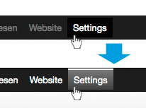

Clean Navbar
Brighter navigation
- In case of working on a very bright working station, as well as presentation with an projector, it may be difficult to see the links in the main menu.
- With Clean Navbar, you get a brighter main-navigation.

Clean Navbar
Helleres Hauptmenü
- Beim arbeiten mit Odoo an einem sehr hellen Arbeitsplatz oder bei einer Präsentation mit einem Beamer, kann man unter Umständen gar nicht oder nur sehr angestrengt die Punkte der Hauptnavigation erkennen.
- Mit Clean Navbar, werden die Punkte der Hauptnavigation besser lesbar.